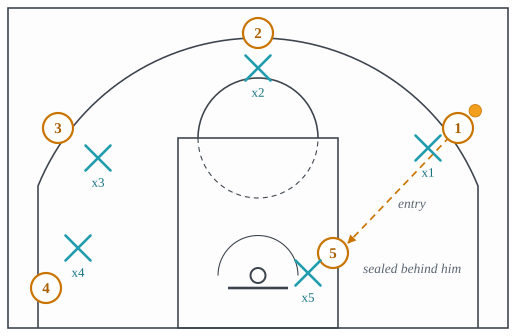
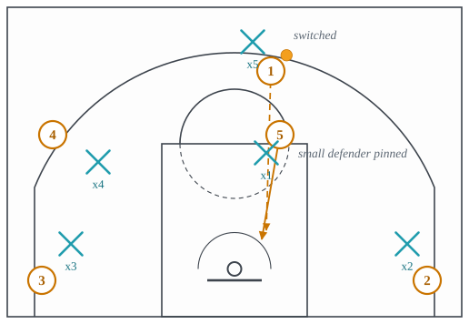
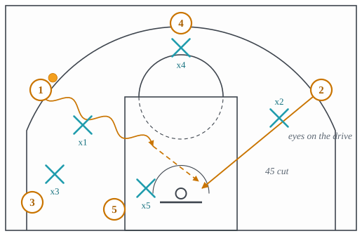
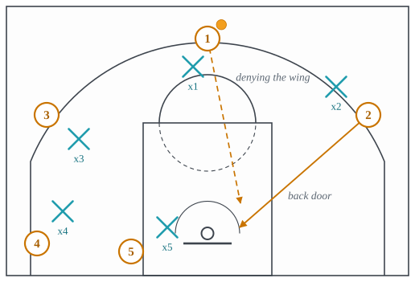
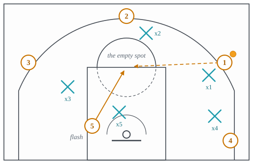
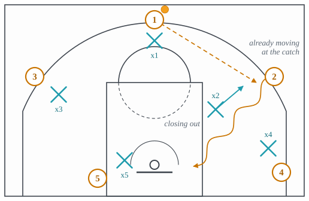
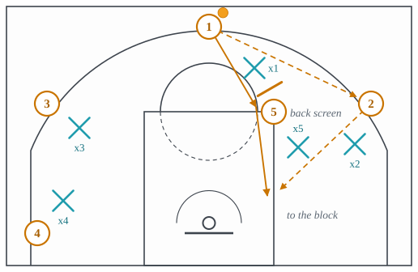
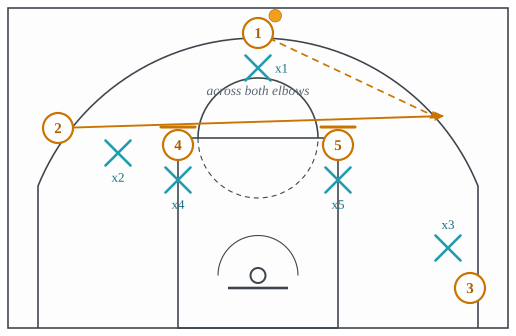
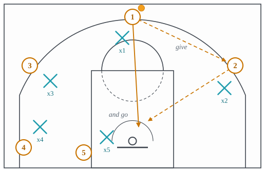
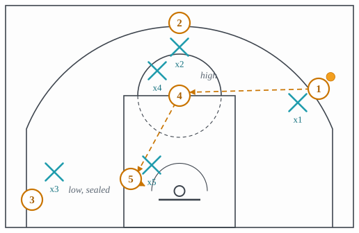

3.7: Cuts, Seals, Handoffs and Post Play
Chapter 3: Offense
Two lectures of screens have made it look as if a player without the ball gets open only when a teammate stands in someone’s way. Most of the time he does not have a screen. He has his defender’s eyes, his defender’s feet, and his own body, and the actions in this lecture are what he does with those three things. A cut is a change of direction timed to the moment a defender is looking somewhere else. A seal is a body placed between a defender and the spot the ball is going. Both are older than any screen, and every offense that runs without a script, which is lecture 3.11, is built on players who know them.
Section 1 is the post-up and the early seal, the two seals. Section 2 is the cuts that punish a defender’s eyes: the 45 cut, the back cut, the flash and the stampede. Section 3 is the two cuts that use a teammate’s body without a screen being called: the UCLA cut and the Iverson cut. Section 4 is the two-man passing actions: give and go and high-low. Section 5 is the lift and the pinch post, which are not cuts to score but movements that keep the floor spaced so the cuts work. Section 6 names the cuts heard for which there is no entry yet.
1 The two seals
The post-up is the oldest way to get a shot near the rim. A player, usually a big, establishes position on the block with his back to the basket and his defender behind him, shows a target hand, and takes an entry pass, as in Figure 1. What he has bought is not a shot but a position: the ball a few feet from the rim, the defender on his back, and every move from there is a move the defender has to guess at. A post-up is also the standard way to use a mismatch: a bigger player against a smaller defender goes to the block, because that is where size matters most.

- Setup
- The big at the block, chest to the passer, wide stance, defender behind him. The passer on the wing, in the big’s line of sight. The other three spaced so no second defender is near the block.
- Trigger
- The big has the defender on his back and a hand up; the passer has a clear angle.
- Read
- The passer reads the defender’s position. Behind the big: the entry pass to the target hand. Playing on the high side, between the big and the ball: the big steps toward the baseline and the pass is a bounce pass to the low side. Fronting, between the big and the passer: the lob over the top, if the weak-side help is far enough away. After the catch, the big reads the help: one defender on him, a post move; a second defender coming, the kick-out to the shooter the help left.
- Payoff
- The ball a few feet from the rim, a defender who has to guess, and a double team that opens a shooter if it comes.
- Beaten by
- Fronting the post with weak-side help behind, so the lob is contested; or a dig from the nearest guard on the catch. Both in lecture 4.4.
The early seal is the post-up done fast, against a switch. When a defense switches a screen, for an instant a small defender is guarding the big. The big does not roll or pop; he turns and pins the small defender under the rim before the defense can send help or switch back, and the pass comes over the top, as in Figure 2. The window is one or two seconds, which is why it is called early. The defense’s answer, the scram switch, is a defender rotating to take the big off the small man, and it is taught in lecture 4.5.

- Setup
- A ball screen against a switching defense. The big screening, the handler above him, the other three spaced wide so no help is near the lane.
- Trigger
- The switch: the big’s defender takes the ball and the handler’s smaller defender takes the big.
- Read
- The big turns into the small defender and drives him toward the rim with his hip and legs, arm up. The handler reads the help. None coming: the lob or the entry now. A defender rotating to the big: the shooter that defender left is open, and the pass goes there instead.
- Payoff
- A layup for the big against a guard, or an open shooter where the help came from.
- Beaten by
- The scram switch, in which a third defender takes the big and the small defender rotates out to the perimeter, before the entry pass; or a defense that switches only screens where the big cannot seal in time. Lecture 4.5.
2 Cuts that punish a defender’s eyes
A defender guarding a player without the ball has two jobs at once: see his man, and see the ball. Every cut in this section is timed to the moment he chooses the ball.
The 45 cut is the cut made when a teammate drives. The wing player’s defender turns his head to the drive and takes a step toward the lane to help. The wing cuts to the rim behind him at a 45-degree angle, and the driver drops the ball off, as in Figure 3. It is the base cut of read-and-react offense, taught in lecture 3.11: the drive is the trigger and the cut is the rule.

- Setup
- A driver on one side. A wing player on the other, one pass away, with his defender between him and the ball.
- Trigger
- The defender’s head turns to the drive, or his feet move toward the lane.
- Read
- The wing cuts to the rim at 45 degrees, behind the defender. The driver reads: cutter open at the rim, drop it off; the defender recovers to the cutter, the spot the cutter left is empty and the next player fills it for a kick-out; the rim protector steps to the cutter, the driver has the layup.
- Payoff
- A layup off a drive that did not itself reach the rim, from a defender who looked at the ball.
- Beaten by
- Helping with the eyes and not the feet, so the defender stays with his man and the drive is left to the rim protector; or a stunt, a fake step at the drive that keeps the defender close enough to recover. Lecture 4.4.
The back cut is the cut made against denial. A defender who is determined to stop a player catching the ball plays high, between his man and the passer, with an arm in the passing lane. That is the one moment he cannot see the rim, and the man he is guarding cuts behind him to it, as in Figure 4. It is also called the back door. Every read-based offense has a rule that says a denied player back cuts, because a defender who denies has already given up the rim.

- Setup
- A player one pass from the ball whose defender is denying the pass, high and in the lane.
- Trigger
- The defender’s hand is in the passing lane and his weight is toward the ball.
- Read
- The cutter takes one step toward the ball to bring the defender higher, then plants and cuts to the rim. The passer reads: cutter open, the bounce pass; the rim protector steps up, the cutter’s spot has emptied and the cutter’s teammate fills it; the defender recovers, the cutter continues through to the far side and the floor is reset.
- Payoff
- A layup against a defender who chose to deny the pass rather than protect the rim.
- Beaten by
- Denying with the ball-side foot and hand only, staying half a step lower than the man so the back cut is contested; or top-locking only when help is under the rim. Lecture 4.4.
The flash is the cut into the empty spot. When the defense sags toward the ball, or shifts as a zone does, a spot opens up, usually at the free-throw line or the elbow, and a player on the weak side cuts across the lane into it and catches facing the basket, as in Figure 5. Against a zone the flash is the whole offense, which is why it is in lecture 3.12 as well; against man-to-man it is how a big gets the ball at the elbow to run the high-low of Section 4.

- Setup
- The ball on one side. A weak-side player, usually a big, on the block or the wing. An empty spot near the free-throw line, because the defense has shifted toward the ball.
- Trigger
- The spot opens: a defender leaves it to help, or a zone shifts.
- Read
- The flasher cuts into the spot with hands up. The passer reads: flasher open, the pass; the flasher’s defender beats him to the spot, the flasher turns and seals for a lob or cuts through to the other side. On the catch the flasher reads the low post behind the defense for the high-low, then the shot, then the drive.
- Payoff
- The ball in the middle of the defense, facing the basket, with the defense on the move.
- Beaten by
- A defender who bumps the flasher as he crosses the lane and keeps a body between him and the ball; in a zone, the middle defender whose job is exactly that spot. Lecture 4.6.
The stampede cut is a cut made to the ball rather than away from it. A player about to receive a pass has a defender closing out at him from the paint. Instead of catching and then deciding, he is already moving toward the rim as the pass arrives, so he catches at full speed and goes straight past a defender who is still decelerating, as in Figure 6. It exists because closeouts got long: a defender who has helped in the paint has fifteen feet to cover to get back to his man, and a man who is moving when he catches makes those fifteen feet impossible.

- Setup
- A player on the perimeter whose defender has sunk into the paint to help. The ball with a passer who can see him.
- Trigger
- The passer picks him up and the defender starts to close out.
- Read
- The receiver starts his drive before the catch, toward the rim, at an angle past the closing defender. He catches on the move. If the defender is closing out square, the receiver goes by him. If the defender has stopped short and stayed low, the receiver pulls up. If the rim protector has stepped up, the receiver drops the ball off or kicks it out.
- Payoff
- A drive that beats the closeout before it happens.
- Beaten by
- A short, choppy closeout that never overruns the receiver, conceding the pull-up to stop the drive; or help so early the receiver is never left. Lecture 4.4.
3 Cuts that use a body
Two cuts use a teammate as an obstacle without a screen being set for them by name. In each, the teammate is standing where he was going to stand anyway, and the cutter runs past him so that his defender cannot.
The UCLA cut starts with a pass. The player at the top passes to the wing and then cuts down the lane line to the ball-side block, running his defender into the big standing at the elbow, as in Figure 7. The big’s stance is a back screen whether or not anyone called it one, and the cutter arrives on the block for a post feed from the wing. It is the entry to the high-post offense the cut is named for, and it appears in dozens of sets because it turns the point guard into a post threat with one pass.

- Setup
- A guard at the top with the ball. A big at the ball-side elbow. A wing on that side to receive the pass.
- Trigger
- The pass to the wing; the guard’s defender turns to watch it.
- Read
- The guard cuts down the lane line past the big. If his defender is caught on the big, the guard posts on the block and the wing feeds him. If the defender goes under the big to the block first, the guard curls back to the elbow for a catch, or the big slips to the rim behind everyone. If the defense switches, the big’s defender has a guard on the block and the big has a mismatch at the elbow.
- Payoff
- A guard on the block with a defender behind him, or a big at the elbow with a small defender.
- Beaten by
- The defender jumping to the ball side of the big before the cut and riding the cutter to the block; or a switch. Lecture 4.5.
The Iverson cut runs wing to wing across the top, over two bigs standing at the two elbows, as in Figure 8. The cutter’s defender has to get past two bodies in a row, and the cutter catches on the far wing already moving toward the basket side of the floor. It is named for the player it was designed to get the ball to, and the team that ran it did so because he was best with the ball moving into a catch rather than standing waiting for one. It is also called a Piston cut.

- Setup
- Two bigs at the two elbows. The ball at the top or the far slot. The cutter on one wing.
- Trigger
- The cutter runs at the near elbow.
- Read
- The cutter goes over both bigs. If his defender trails, he catches on the far wing and attacks the closeout. If the defender goes under the bigs to beat him to the far wing, the cutter stops at the second big and curls it to the rim. If a big’s defender switches onto the cutter, that big slips to the rim.
- Payoff
- A catch on the far wing at speed, with the defender two bodies behind, and the whole side of the floor ahead of the cutter.
- Beaten by
- The defender going under both bigs along the free-throw line and meeting the cutter at the far wing, conceding the curl; or switching at the second elbow. Lecture 4.5.
4 Two-man passing actions
Give and go is the oldest two-man action in the sport: pass, cut to the rim, get it back, as in Figure 9. It works because a defender relaxes for one step when his man gives up the ball, and one step is enough. The get action of lecture 3.2 is the give and go with a handoff in place of the return pass.

- Setup
- Two players one pass apart, with the lane empty behind the passer’s defender.
- Trigger
- The pass; the passer’s defender takes his one step off.
- Read
- The passer cuts to the rim. If his defender is late, the return pass. If his defender recovers to the cut, the passer continues through and the floor resets with the ball on the wing. If the rim protector steps up to the cutter, the receiver drives the space he left.
- Payoff
- A layup two passes after the possession began.
- Beaten by
- Jumping to the ball on the pass, so the defender is between his man and the rim before the cut starts, which is the first rule of every man-to-man defense. Lecture 4.4.
High-low is the two-big passing action. One big is at the high post, the free-throw line or an elbow; the other is at the low post on a block. The ball goes to the high post, and as it arrives the low post seals his defender on his hip, so that the high post can drop the ball over the top to him at the rim, as in Figure 10. Against a defense that fronts the low post, the high-low is the answer: the fronting defender is in front, the seal holds him there, and the pass comes from above where he cannot reach it.

- Setup
- One big at the high post, one at the low post on the opposite block. The ball on a wing with a passing angle to the high post.
- Trigger
- The pass to the high post.
- Read
- The low post seals his defender as the ball is in the air, holding him on the hip away from where the pass will come. The high post catches and reads: the seal held, the pass over the top; the defender fought around to the high side, the low post steps to the baseline side for a bounce pass; the help came from the weak side, the shooter it left is open for a skip. If nothing is there, the high post faces up and the action is a pinch post.
- Payoff
- A catch at the rim against a defender who has been sealed, thrown from an angle the seal made safe.
- Beaten by
- The low defender playing behind rather than fronting, so there is no seal to hold; or the weak-side low man arriving on the catch. Lecture 4.4.
5 Movements that keep the floor spaced
Two entries in this lecture are not cuts to score. They are movements a player makes so that the cuts and drives around him work.
The lift is the corner player’s move when the ball is driven baseline on his side. If he stays in the corner, the driver has no pass: the defender who helps on the drive comes from the corner, and the corner is then covered by the rim protector’s rotation. If he lifts to the wing as the drive starts, he is a kick-out target the help defender has to leave to guard, and the drive gets a second option. The lift is a spacing rule, not a cut: the player is moving to stay one pass away from the ball.
The pinch post is the big catching at the weak-side elbow, facing the ball, with nobody else on his side of the floor. From there he has a handoff for a guard cutting past him, a shot, a drive, or the pass to a back cutter, and the offenses that use it, the Princeton and the triangle of lecture 3.9, use it as the hub of everything on that side. It is a spot as much as an action, and it is named here so that the phrase means something when it is heard.
6 Names heard for which there is no entry yet
The glossaries describe several more cuts and post actions by one publisher only, so each has a description here and no entry until a second source names it. The diff is data/sources/glossary_diff_2026-09-21.md.
- Curl, fade, straight, and the V-cut and L-cut. The first three are the reads off a screen taught in lecture 3.5. A V-cut is a perimeter player stepping in toward the rim and exploding back out to receive; an L-cut runs up the lane line and out to the wing. They are how a player without a screen gets open for a perimeter catch.
- Shallow cut. A cut made in front of the ball to a new spot beside the handler, so the two exchange positions; the wave is its cousin, a cut made to create a double gap.
- Rub and brush screen. A cut made so the cutter or his defender gets in the path of a different defender without contact, so it works like a screen but is not one under the rules.
- Duck-in. A post player stepping into the lane and sealing his defender with his inside foot the moment the defender is in a help position.
- Slice. A cut from the opposite corner through the lane, sometimes off a screen, to the top of the key.
- Split cut. After a post entry, the two perimeter players nearest the post screen for one another and cut in opposite directions, so the post has two cutters to read.
- Barkley. Dribbling from the perimeter into the block for a post-up, as the player it is named for did.
- Boomerang. A pass to a teammate followed by an immediate return pass, so the original handler has a live dribble again, usually to attack a mismatch after a switch.
- Dive, reverse seal, basket cut. A dive is a cut from the high post to the low post; a reverse seal is the low post holding his defender on the outside hip as the ball is reversed, which is the seal the high-low depends on; a basket cut is any hard cut to the rim.
The idea to carry into lecture 3.8 is that the screens of lectures 3.5 and 3.6 and the cuts of this one are what a team’s set plays are made of. The next lecture is about the sets themselves: the alignments a team starts from and the scripts it runs from them.